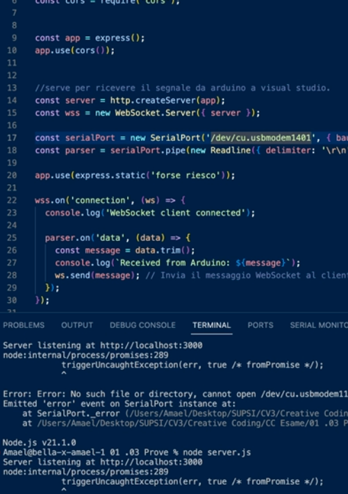
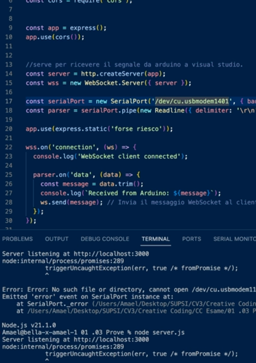

Amaël Cacciola
THE HELPDOORBELL
The idea was to create a smart doorbell that would interact with the postman when you are not at home, leaving a message and opening the door. The project evolved successfully and its functionality remained consistent with the initial concept. Using the arduino, when the button is pressed, a signal is received from a site. When the signal arrives, the sound starts from the site and the camera is activated. By integrating teachable machine into the use of the camera it tries to recognise the parcel, when it is recognised In addition, a voice starts that will tell it to leave the parcel at home. this project incorporates Arduino, giving me the opportunity to experiment and prototype this rather rudimentary doorbell. Through this journey, I explored the realms of smart technology, improving my skills and contributing to the realisation of this innovative bell prototype.
THE TOOL
OVERVIEW

 

VIDEOS
The tool in work, desktop prospective.
Promotional Video
TEACHABLE MACHINE

Teachable machine is a software that, by giving it images of what it has to recognise then using the camera, recognises it. I used it to play messages when it recognises the objects.
Some tests for the first interface I had in mind

Final interface
BACKSTAGE

Prototype construction
Various tests for the use of arduino and different interfaces
Prototype construction